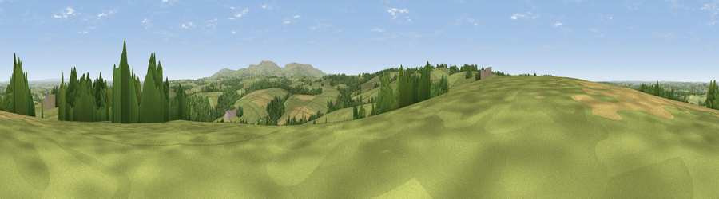

Viewpoint near Northlew
#23979 in England · top 40% of its area beats it · near NorthlewThe view, rendered

A 360° render of this exact spot computed from the terrain model, tree cover and land cover — summer colours, afternoon light, calibrated against photographs of famous viewpoints. Real trees, hedges and buildings will differ in detail.
The panorama
Grey silhouette: terrain skyline in each direction (720 bearings, Earth curvature and refraction included). Dashed green: skyline with trees (+15 m) and buildings (+8 m) as obstacles. Blue strip: how far the ground is visible on each bearing.
Where the view opens
Wedge length = distance to the farthest visible ground on that bearing (vegetation-aware). Rings at 10, 25 and 50 km.
What fills the view
79% grassland · 15% woodland · 5% cropland ·
Angular shares of the visible panorama (visual magnitude), not map area. Landscape diversity 0.29 (0–1 Shannon).
Key numbers
More beautiful places nearby
The staircase of upgrades: each row has a higher view potential than everything closer. Driving times are estimates from straight-line distance, calibrated against real road routing — check an actual route before setting out.
| Place | Direction | Drive | Score |
|---|---|---|---|
| Viewpoint near Bratton Clovelly | SSW · 2 km | ~6 min | 60.9 |
| Sourton Tors | SSE · 9 km | ~18 min | 74.8 |
| Viewpoint near Sourton | SE · 10 km | ~19 min | 75.7 |
| Yes Tor | SE · 11 km | ~21 min | 78.5 |
| Viewpoint near North Bovey | ESE · 28 km | ~44 min | 79.3 |
| Viewpoint near Dousland | SSE · 28 km | ~45 min | 81.0 |
| Viewpoint near Parkham | NNW · 29 km | ~45 min | 81.7 |
| Viewpoint near Bucks Mills | NNW · 29 km | ~46 min | 84.0 |
50.75694, -4.13047 · source: screening · position refined by local search. Computed location — check access rights before visiting.